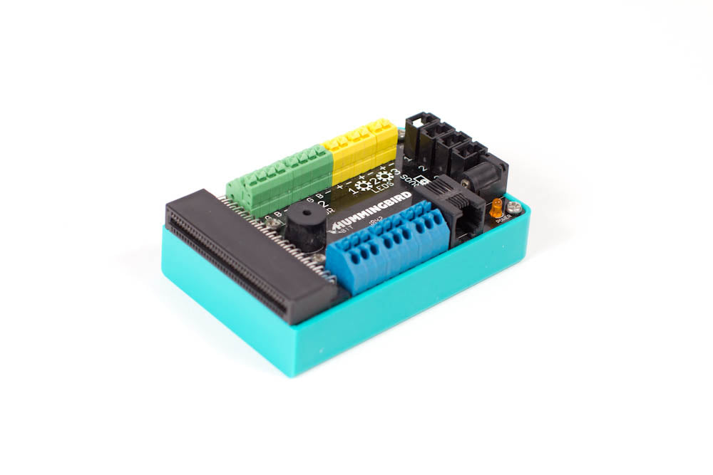
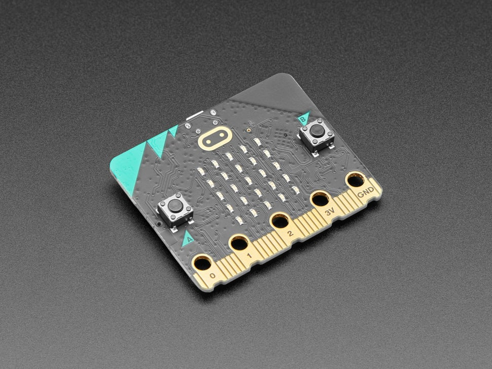
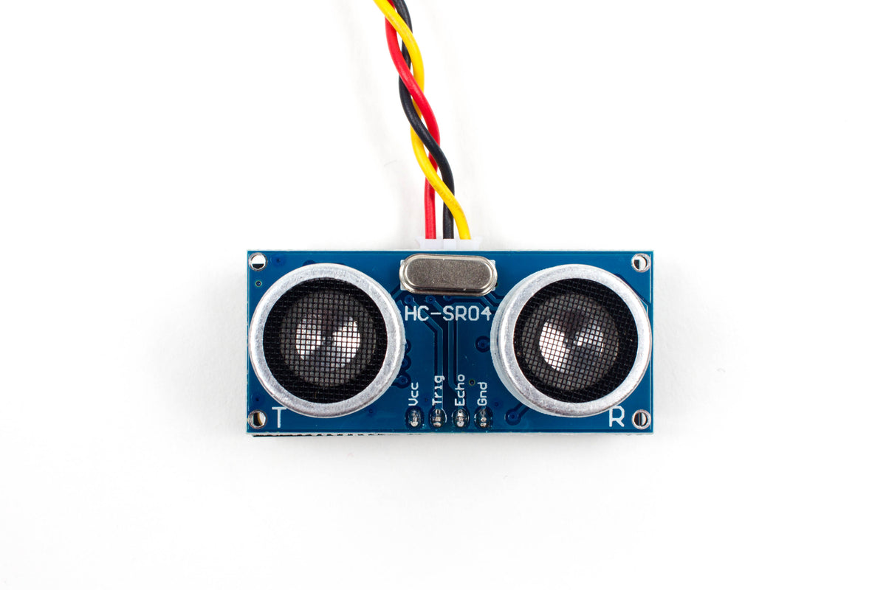
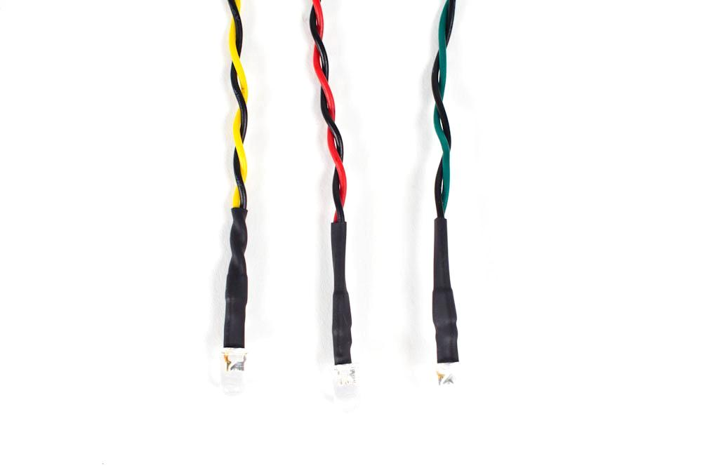
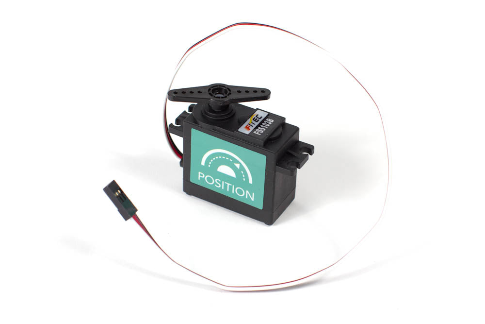
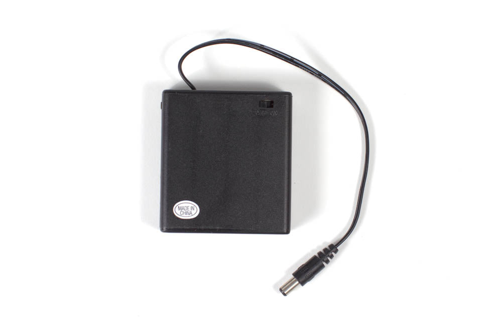
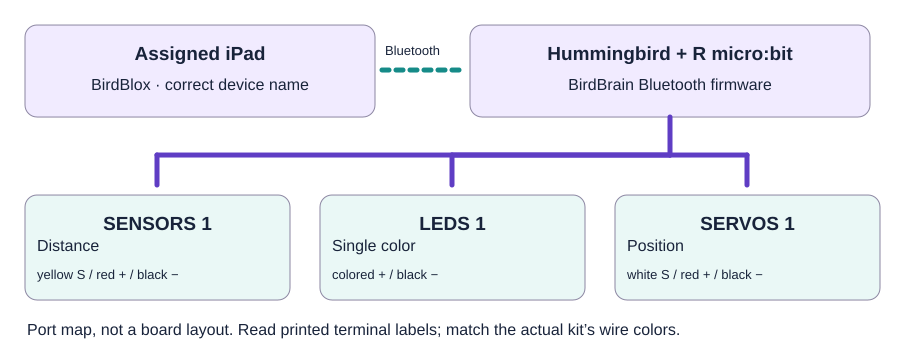

Setup and Bluetooth connection
Match the device initials and confirm the connection indicator before running any output.
Open video / illustrated lesson →Mentor preparation · Thursday, September 24
Prepare nine matched Robotics sets, four BirdBlox challenges, and a dependable reset before the first team connects.
Stephanie leads the Robotics lane; Tri prepares and releases the electronics. The 18 Robotics students work in nine pairs, staying with the same kit while switching Driver/Navigator roles.
| Item | For each pair | Preparation |
|---|---|---|
| Hummingbird Bit + micro:bit | One numbered controller with its R board | BirdBrain Bluetooth firmware, matching labels, and recorded full device name/initials. |
| iPad + BirdBlox | One charged assigned iPad | App opens, Bluetooth works, four starter files/cards are available. |
| Power | One manufacturer-compatible kit supply | Use the kit’s documented battery pack or adapter; test under servo load. |
| Capability board | Distance sensor, single-color LED, secured position servo | SENSORS 1, LEDS 1, SERVOS 1; lightweight pointer and marked clear movement zone. |
| Table resources | Port map, four-box evidence sheet, reset card | Record threshold and safe angles. Stage a complete spare or challenge demo video. |
Product/reference photos, not our delivered inventory. Tap a photo to enlarge it. Compare the actual labels and kit list; appearance alone does not confirm electrical compatibility. These optional photos stay out of printouts.

Controller with labeled sensor, LED, and servo connections. Its assigned micro:bit is a separate required component.
Photo: BirdBrain / CreXo
Small board with A/B buttons, LED display, and gold edge pads. Keep W and R kit labels with their assigned boards.
Photo: Adafruit
Small sensor with two round transducers. Use the labeled Hummingbird sensor and its documented port connection.
Photo: BirdBrain / CreXo
LED on a two-wire lead. It connects to the controller; it is different from the flat sewable LED board.
Photo: BirdBrain / CreXo
Motor case with output shaft/horn and a three-wire lead. Check the model label: rotation servos can look similar.
Photo: BirdBrain / CreXo
Kit battery pack holds four AA cells. Keep it matched to the Robotics controller; it is not a Wearables AAA pack.
Photo: BirdBrain / CreXo
Kit / iPad / R board: ____________________
Full device name / initials: ____________________
HOME angle: ______° · ACTIVE angle: ______° · Threshold T: ______ cm
Far: ______ · Near: ______ · Far again: ______ · Tested by/date: ____________________
These are readable block assembly recipes, not screenshots or importable BirdBlox files. Choose the real blocks in BirdBlox, select the assigned robot in each, and replace HOME, ACTIVE, and T with your measured numeric values. No JavaScript conversion is needed. The one-second waits are starting values; increase them if the tested mechanism needs more settling time.
Use this when normal control is available. It returns the pointer to its pretested ready position; it is not an emergency stop.
At a normal transition, let the one-shot challenge finish (or stop its script), open SAFE RESET, run it, and wait for the pointer to settle. Then tap Stop, disconnect BirdBlox, and switch kit power off. No other script should be commanding the servo.
Start with the same flag → LED 0 → servo HOME → wait stack as SAFE RESET. Confirm the right kit responds, then have both partners rehearse connection and shutdown.
Place a Bit Sensor reporter from Robots in the workspace; choose Distance and port 1. Tap the reporter to read its value. This is a reporter, not a stack under a green flag.
Record far/near/far readings in centimeters with a centered target. Choose T between the observed ranges; repeat if they overlap. Near should read below T for this example.
This one-shot sequence tests light, then motion, then both together. Keep hands outside the marked movement zone.
Place the target, then tap the green flag. The program samples distance once after resetting, responds for one second if near, and returns to ready. Move the target and tap the flag again for a new trial; this starter has no forever loop.
The IF/ELSE comes from Control; the less-than comparison comes from Operators. In BirdBlox, the nested blocks fit inside the IF/ELSE shape—“end if” is a reading aid here, not an extra block. At a reading equal to T, the else branch runs.
Official BirdBlox block reference PDF · Download the written starter recipes
These official short clips are silent. Open the linked module for its step-by-step pictures. Use our fixed port choices, measured threshold, and preflighted servo positions when building the classroom example.
Match the device initials and confirm the connection indicator before running any output.
Open video / illustrated lesson →The module demonstrates the LED terminal connection; continue to its LED blocks lesson.
Open video / illustrated lesson →Watch how the connector aligns to signal, positive, and negative. Our mechanism uses only its recorded safe positions.
Open video / illustrated lesson →The official example uses 15; our T must come from the actual rig’s measurements.
Open video / illustrated lesson →Use these 25-minute challenge cards within the current Thursday agenda. The 114-minute rotation in the full plan is an expanded reference; schedule live work around available trained supervision.
| Challenge | Students do | Save before switching roles |
|---|---|---|
| 1 · Controller + reset | Identify kit, power, controller, R board, and ports. Each partner connects/resets once. | Kit/device identity, label photo, reset explanation. |
| 2 · Read an input | Run far → near → far with one controlled change; choose T. | Port, three actual readings, threshold, and prediction. |
| 3 · Test two outputs | Run LED and secured servo separately, then together; return home. | Blocks screenshot plus observation of light and motion. |
| 4 · Complete interaction | Run near, far, near trials; show input → decision → two outputs → reset. | Short clip or sequence photos; both partners explain one system part. |
| Symptom | Mentor response |
|---|---|
| No connection / red dot / gray blocks | Check kit power, iPad Bluetooth, and exact device identity; disconnect and reconnect only the assigned device. Ask Tri to inspect firmware or board seating with power off. |
| Unexpected kit moves | Stop the script and switch off the affected kit. Verify device name, selected robot, and labels before reconnecting. |
| No or unstable distance change | Confirm Distance/port 1, wire labels, and a centered target. Re-measure; do not copy another team’s threshold. |
| LED or servo does not respond | Stop and power off before checking the selected port, wire orientation, and supply. Use a known-good component or complete spare. |
| Buzzing, stalling, blocked pointer, warmth, or unstable movement | If control is available, stop the code; switch Hummingbird power off immediately. Keep hands clear until motion stops, then disconnect BirdBlox and inspect. Do not run a movement reset into a fault or force a powered servo. |
| Incomplete kit or persistent fault | Use the complete spare or a recorded capability tour; label the failed set INSPECT and record which evidence was observation only. |
Print this guide for the Robotics lead, the existing Robotics challenge/evidence cards, and one opening/closing sheet. Do not print nine full guide copies.